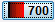
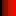
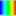
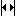

The Display panel allows you to edit the parameters that display the selected image in the image view. The Display panel has individual sections for each channel available on a given acquisition. This example shows the 700 channel in red and the 800 channel in green.
Click the Features at the top left corner of the Display panel to toggle between displaying and hiding all features on the image. Features include Bands, Lanes, Wells, Spots, Annotations, and more. Select specific features to display or hide on the Show group in each Analysis tab.
You can adjust the display with the Brightness and Contrast sliders. Drag a slider to adjust the display.
You can also adjust the display using curves on a histogram. Click Curves on the top of the Display panel to open the Curves tab.
NOTE: You can also click the arrow (>) in the Display group on the Image tab to open a dialog and choose Curves to view the Curves for this image. Select Brightness/Contrast to view the Brightness and Contrast sliders again.
The x-axis of each panel represents the raw pixel values. Each panel has a bar graph displaying a histogram of number of pixels with each raw value. The higher the bar at a given location on the x-axis, the more pixels that contain that particular intensity value. This histogram is shaded with the color map in use for that channel. Also shown in each panel is an adjustable curve that maps raw data to displayed data.
The adjustable curve overlaying each histogram represents how the raw data maps to the displayed data. Adjust any of the three dots on the line (Max, Min, or K Value) to optimize the displayed image.To view the numbers hover the mouse over one of the three dots in the line. The Max and Min numbers are displayed. The middle one also shows the K value, which is used to smoothly change between linear (K=0) and logarithmic (K=1) mappings of the data onto the color maps.
You can adjust each channel’s display parameters independently.

Use the Channel label to cycle through channel views. Press once to show the single channel. Press again to show the other channels.

Use the color buttons to change the channel’s display color.
Use the expand button to show the full histogram in full zoomed out view. Use the zoom in button to zoom back incrementally or the automatic button to zoom in all the way.NOTE: The Choose Display and Adjust Display dialogs automatically open after a scan for each channel acquired. Click the arrow (>) in the Display group to open the Display Options dialog and remove the check marks to disable this feature.
Click Link at the top of the Display panel to force all images currently in the filtered Images Table to have the same Image Display values as those applied to the display of the selected image. When the Image Display values are linked, any changes that you make to the Curves or Brightness/Contrast sliders affect all the images in the filtered view regardless of the image view mode (single image or multi-image mode).
NOTE: The Link button is only enabled after a filter has been defined and applied to the Images Table. It is unavailable if no filter has been applied.
The Image Display values will differ depending on the instrument and acquisition settings used. Linking the Image Display values of images from different instruments, or from the same instrument with different acquisition settings, will not provide accurate comparisons.
{kind=link}
{kind=link}
{kind=link}